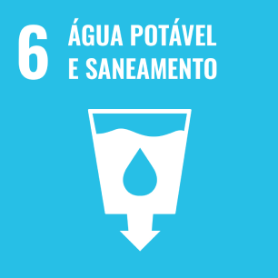
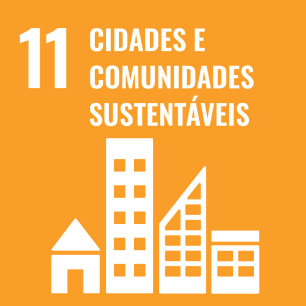
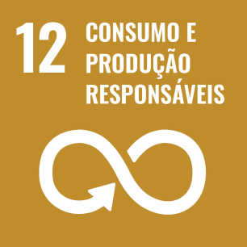
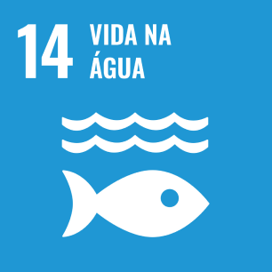
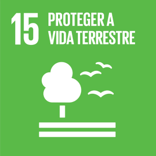
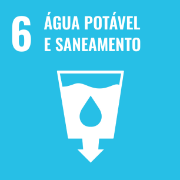
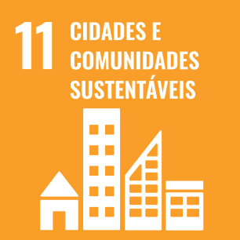
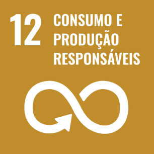
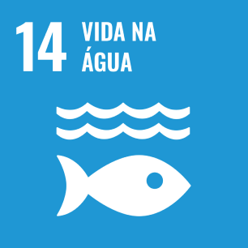
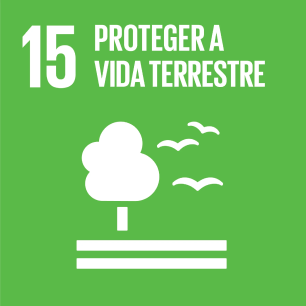

Investigar desafios e impactos ambientais do descarte inadequado do óleo de cozinha em estabelecimentos gastronômicos;
Você já pensou o quanto o descarte Incorreto do óleo polui o meio ambiente?
De acordo com os dados da Associação Brasileira das Indústrias de Óleo (Abiove), o Brasil produz mais de 3 bilhões de litros de óleos vegetais por ano, e o descarte inadequado de 1 litro desse óleo pode contaminar até 25 mil litros de água.
Introdução
Apesar da atual preocupação com o meio ambiente, diariamente ocorre o descarte de óleo de origem vegetal ou animal proveniente de frituras, tanto residencial quanto comercial, diretamente no sistema de esgoto, no solo e até mesmo no lixo. Como consequência, diversos problemas são gerados, tais como o entupimento dos encanamentos, impermeabilização do solo, encarecimento do tratamento na rede de esgoto, dentre outros.
O que é o Fryter?
Apesar da atual preocupação com o meio ambiente, diariamente ocorre o descarte de óleo de origem vegetal ou animal proveniente de frituras, tanto residencial quanto comercial, diretamente no sistema de esgoto, no solo e até mesmo no lixo. Como consequência, diversos problemas são gerados, tais como o entupimento dos encanamentos, impermeabilização do solo, encarecimento do tratamento na rede de esgoto, dentre outros.
Quais São Os Nossos Objetivos?
Avaliar métodos existentes de separação e reutilização do óleo de cozinha;
Estabelecer diretrizes para o uso sustentável do óleo de cozinha separado;
Avaliar a eficácia do Fryter em termos de decantação, armazenamento e qualidade do produto final.
Quais São Os Nossos Objetivos?
Investigar desafios e impactos ambientais do descarte inadequado do óleo de cozinha em estabelecimentos gastronômicos;
Avaliar métodos existentes de separação e reutilização do óleo de cozinha;
Estabelecer diretrizes para o uso sustentável do óleo de cozinha separado;
Avaliar a eficácia do Fryter em termos de decantação, armazenamento e qualidade do produto final.
Objetivos de Desenvolvimento Sustentável da ONU
O Fryter é uma iniciativa que visa contribuir para o desenvolvimento sustentável do Brasil e do
mundo, seguindo os princípios da Agenda 2030 das Nações Unidas. As ODS da ONU são os Objetivos de
Desenvolvimento Sustentável, que são 17 metas globais para acabar com a pobreza, proteger o meio
ambiente e garantir a paz e a prosperidade para todas as pessoas até 2030.
O Fryter se alinha com as ODS da ONU ao oferecer uma solução para o problema do descarte
inadequado do óleo de cozinha, que causa diversos danos à natureza e à saúde pública. Ao
utilizar o decantador Fryter, os estabelecimentos que trabalham com frituras podem separar o
óleo residual da água, facilitando a coleta e o reaproveitamento desse resíduo. Dessa forma, o
projeto Fryter contribui para reduzir a poluição da água e do solo, evitar o desperdício de
recursos naturais, promover a economia circular e incentivar a geração de renda a partir do óleo
reciclado.
O projeto Fryter segue as seguintes ODS:
 








